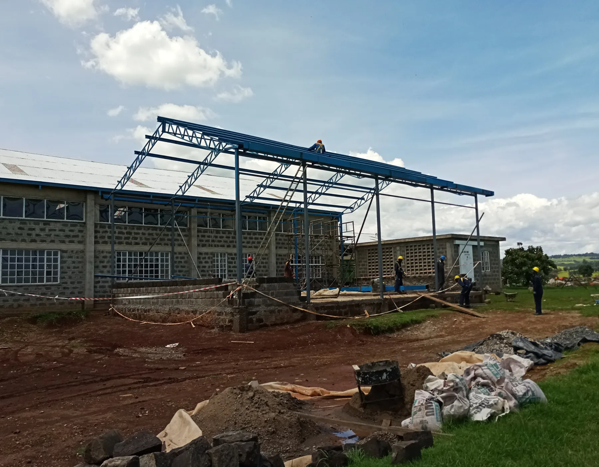
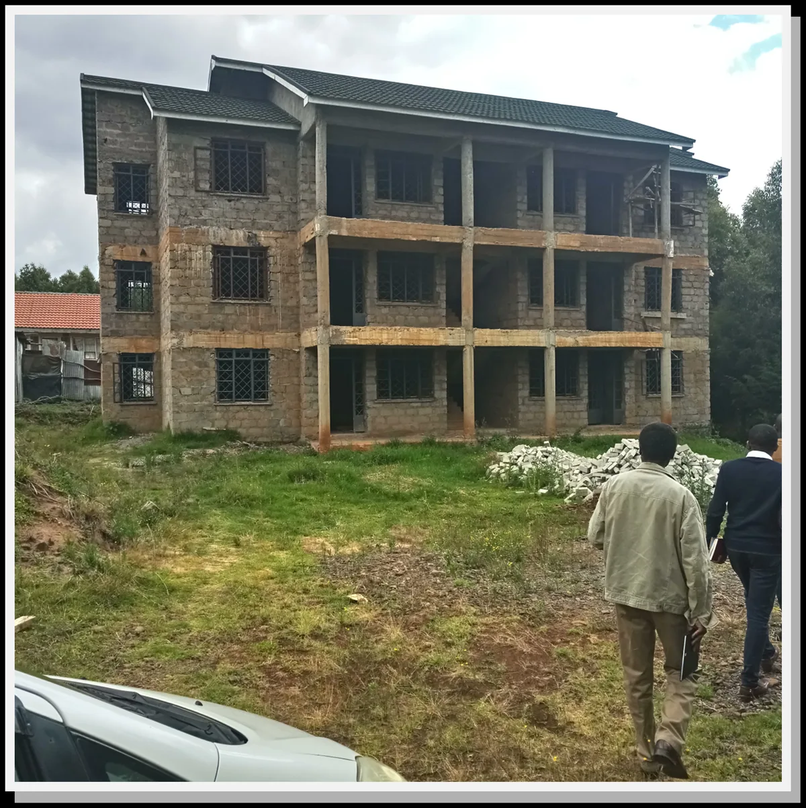

Decades of experience
Roots dating back to 1988, with a long-standing presence in Kericho and practical experience across construction environments.
Borabu Builders delivers practical construction and infrastructure solutions across buildings, water, roads, structural steel, boreholes and renovations.

Clear scope. Practical execution. Multiple disciplines under one construction partner. Borabu brings decades of experience to work that needs to be done properly.
Roots dating back to 1988, with a long-standing presence in Kericho and practical experience across construction environments.
Building works, roads, water infrastructure, steel, boreholes and renovations coordinated through one contractor.
Experience referenced across tea, commercial, institutional and public-sector environments.
Solutions shaped by real project conditions, practical constraints and the outcome the client needs delivered.
From a single facility to supporting infrastructure, our work spans the core disciplines clients need to move a project forward.
Residential, commercial, educational, industrial and public-service facilities.
↗ 02Treatment, storage, reticulation, dams and related water infrastructure.
↗ 03Construction, rehabilitation and maintenance for practical site conditions.
↗ 04Fabrication and installation for building and infrastructure requirements.
↗ 05Drilling, installation, rehabilitation and maintenance for groundwater access.
↗ 06Repairs, refurbishment and finishing work that extends the life of facilities.
↗
“Good construction is not only what you see when the work is finished. It is the discipline behind every decision that got it there.”
Our capability is suited to clients who value straightforward execution, dependable coordination and a contractor able to work across multiple disciplines.
A selection of building, water, road and borehole works from Borabu's existing public project portfolio.
Borabu Builders traces its roots to 1988, when it began in Kericho County as Anyoka Borabu Builders.
Over time, the company expanded its capabilities across construction and infrastructure work while retaining a practical, delivery-focused approach.
Read our story →Share the location, scope and project details. You can also attach plans or supporting documents when you submit your enquiry.